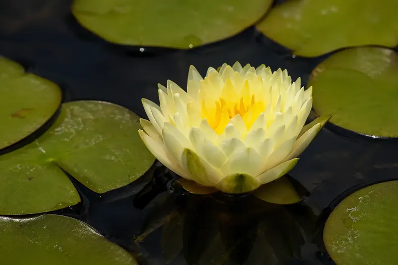

Растения для пруда
Нимфея “Норма Годэ”
Цена и наличие
- C2-C5160 BYN / шт.В наличии
Данные на 23.11.2026.
Характеристики
- Размер сорта
- Крупный
- Глубина посадки
- 60-80 см
- Диаметр цветка
- 16-20 см
- Диаметр покрытия воды
- 1,3-1,8 м
- Тип корневища
- Rhizomatous
Описание
Нимфея «Норма Годэ» — это декоративное водное растение, идеально подходящее для оформления прудов и водоемов.
Нимфея Norma God’e (Норма Годэ) — это изысканное водное растение, которое прекрасно подойдет для оформления декоративных прудов и садовых водоемов. Ее крупные цветы, достигающие в диаметре 15-20 см, раскрываются на поверхности воды в солнечные дни, создавая легкое и воздушное впечатление, и закрываются вечером или в пасмурную погоду. Цветение у этого вида длительное и обильное, что делает его особенно привлекательным для украшения прудов в теплое время года. Нимфея Norma God’e предпочитает солнечные места с не менее чем 4-6 часами прямого света и хорошо развивается в водоемах глубиной от 40 до 80 см, хотя при хорошем освещении может расти и глубже. Она достаточно устойчива к перепадам температуры и переносит как жару, так и легкие заморозки. Уход за этим растением несложен: важно своевременно удалять поврежденные листья и подкармливать его удобрениями для водных растений в период активного роста. Размножается нимфея делением корневищ, что облегчает ее размножение и поддержание здорового вида. Благодаря своим декоративным качествам и нетребовательности, Norma God’e станет прекрасным украшением любого пруда, придавая водоему естественную красоту и уютную атмосферу.